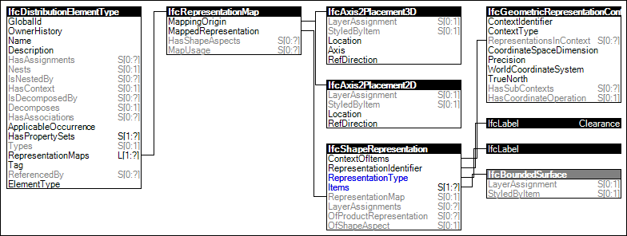

Link to this page
Link to this pageFor elements that require clearance such as for safety, maintenance, or other purpose, this represents the 3D clearance volume of the item having RepresentationType of 'Surface3D'. Such clearance region indicates space that should not intersect with the 'Body' representation of other elements, though may intersect with the 'Clearance' representation of other elements.
Figure 95 illustrates an instance diagram.
 |
Figure 95 — Type Clearance Geometry |